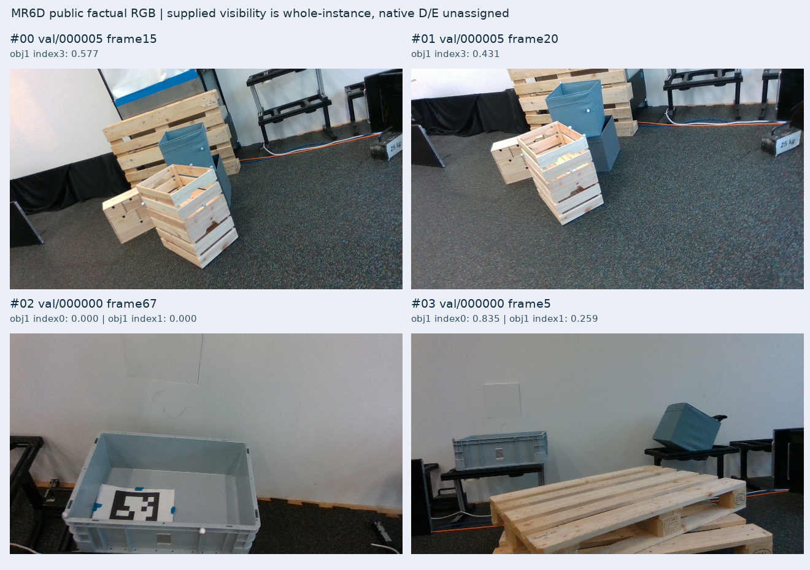
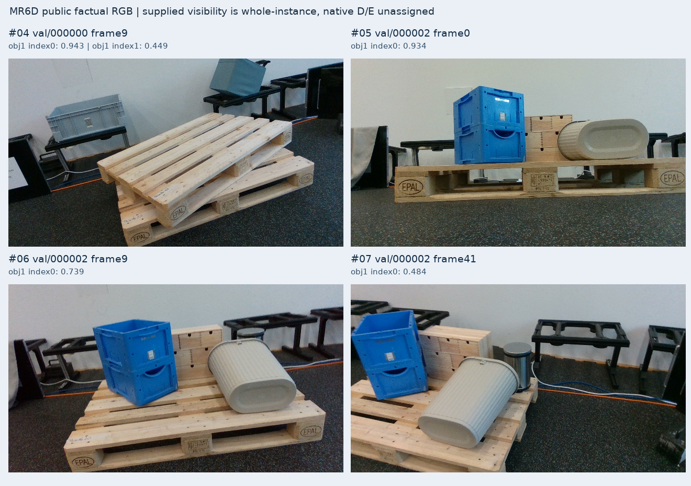
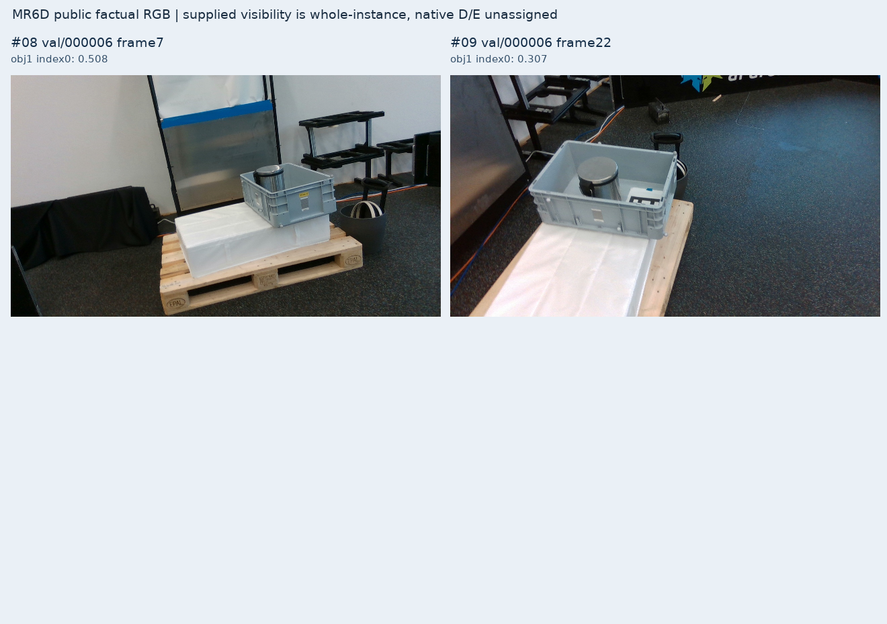
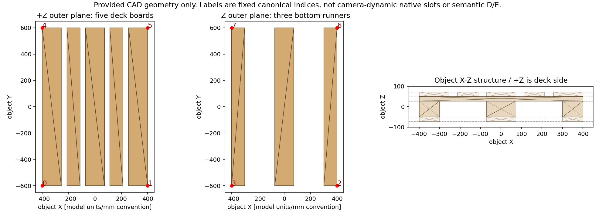
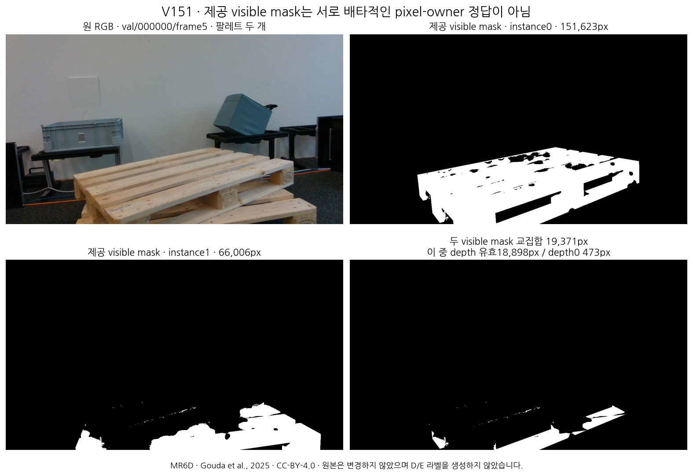

실제 평판형 Euro 팔레트의 독립 공개 source를 확보했다. 겹친 팔레트와 다양한 적재물은 실제 RGB로 확인했으며, 제공 mask가 배타적 pixel-owner gold가 아니라는 한계도 확인했다. native 역할 대응·보임/외부 가림·query 위치 증거의 라벨 정의를 먼저 맞춘 뒤 학습으로 이어가야 한다.
고정된 source revision에서 metadata를 먼저 검사하고 hash 규칙으로4장면·10프레임을 골랐다. RGB·depth·13건의 팔레트 instance 관측(화면밖2건 포함)의 full/visible mask와 mesh를 포함한47파일7.79MB를 실제 수집하고 원 LFS/Git content ID와 전수 비교했다. 새 모델·학습·현재 평가셋 재평가·PnP는 없다.
겹친 평판 팔레트, 파란 KLT·회색 통·목재 상자, 흰 적재물이 포함돼 있다. 제목의 수치는 전체 instance의 제공 visible fraction이며 native 키포인트 보임 라벨이 아니다. 이미지는 표시용 크기만 줄였고 표식·예측을 더하지 않았다.



제공 CAD는800×1200×144 단위(mm 관례)이며 +Z 쪽5개 상판, -Z 쪽3개 하부 runner를 확인했다. 8개 canonical AABB corner의 mesh surface 거리는 모두0이다. 이는 source CAD의 geometry 확인이며 실물 오차나 실제 initializer channel 대응의 인증은 아니다.


frame5의 교집합19371px 중18898px은 양수 depth다. frame9도16152px이 겹친다. 이 사실만으로 source annotation 생성 원인을 확정하지는 않지만, 두 mask를 서로 배타적인 pixel owner로 삼을 수 없다는 점은 확인된다. full/visible mask 차이에는 외부 가림뿐 아니라 관측·형상·pose 오차의 영향도 있으므로 native D/E를 자동 생성하지 않았다.
공개 GT가 있는16 val장면 중 팔레트는5장면230프레임303 instance 관측이다. hash로 고른4장면(000000/2/5/6)의185프레임258관측은 향후 source 개발 후보이며 현재10프레임만 받았다. 나머지000001의45프레임45관측은 추가 RGB를 읽기 전에 source validation으로 남겼다. 이는 같은 물체를 포함할 수 있는 장면 분할이고 MR6D 공식 blind benchmark 성적을 주장하는 구성이 아니다. 다른 공개 test3subset에는 GT가 공개돼 있다고 가정하지 않는다.
이번 추가 source는 목재 Euro 직사각형 팔레트다. 정사각형 target의 추가 실사 감독을 확보한 것은 아니며 두 유형을 계속 별도로 검증해야 한다.
제공 pose/K와 mask는 native8 D/E 직접 주석이 아니다. 두 instance의 visible mask가 frame5에서19371px, frame9에서16152px 겹친다. 교집합 대부분은 depth유효여서 invalid depth만으로 설명할 수 없다. whole-object visib_fract=0인 선택frame67은 화면 밖이며 외부가림 E로 강제할 수 없다. scene000005는 세워진 팔레트다. source +Z와 dynamic native역할, 실제 R0 slot 대응을 구분해야 한다. 논문은 실물 팔레트 치수 변동과 static pose의 low-centimeter 오차를 명시하므로 projection을3px 정밀 gold로 취급하지 않는다. 선택10장은 실내정적자료다. 사람/야외가림을 실제샘플에서 확인했다고 주장하지 않는다. JPEG 시각검수는PIL이며 다음 learned initializer 입력 decoder/transport는 원계약과별도인증이필요하다. GTinfo px_count_all은 BOP 확장 canvas의 화면밖 silhouette를 포함하므로 image mask의면적과다를수있다. image-space valid/visible count는12/13일치하며 한 관측만+1px 차이로 원형보존했다.
MR6D · Anas Gouda et al., 2025 · CC-BY-4.0. 저자 공개 데이터 · 논문·주석 정확도 설명. 제공 GT pose를 새로 최적화하지 않았다.
native D/E/S 주석0 · 새 학습0 · 전체 목표 미해결 · 모델 채택 없음